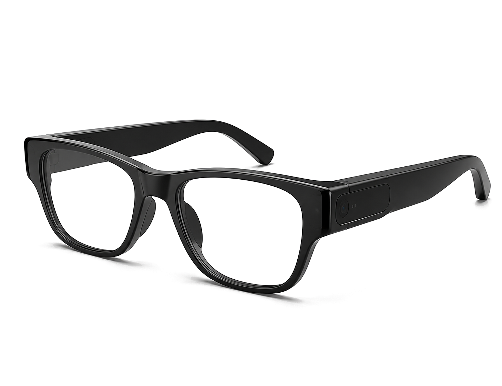

上传鸟照
预览别人的照片，也可以上传自己的鸟照，让识别结果带你进入下一步。
智能观鸟系统
Birdora 观鸟眼镜把拍摄、定位、AI 识别、鸟类知识图鉴和分享社区连在一起， 让每一次外出观察都变成可记录、可学习、可交流的自然笔记。
学习路线图
按顺序完成三个步骤：先上传照片观察细节，再检索鸟种资料，最后把发现整理成自己的观鸟日常。
预览别人的照片，也可以上传自己的鸟照，让识别结果带你进入下一步。
支持 Wiki 资料线索和本地图鉴检索，帮助你核对习性、栖息地与观察特征。
配合照片发布你的观鸟日常，旁边会浮动展示其他人的日记，方便交流和学习。
AI 识别
选择照片后，浏览器会加载 OSEA 鸟类模型，从全量标签库返回 Top 5 候选，并优先匹配本地图鉴资料。
识别结果
正在准备识别模型...
我的观测记录
鸟类知识图鉴
正在准备 OSEA 鸟类标签索引...
分享社区
设备管理
同步拍摄记录、电量、固件与存储空间，保持眼镜和网站数据一致。

蓝牙未连接